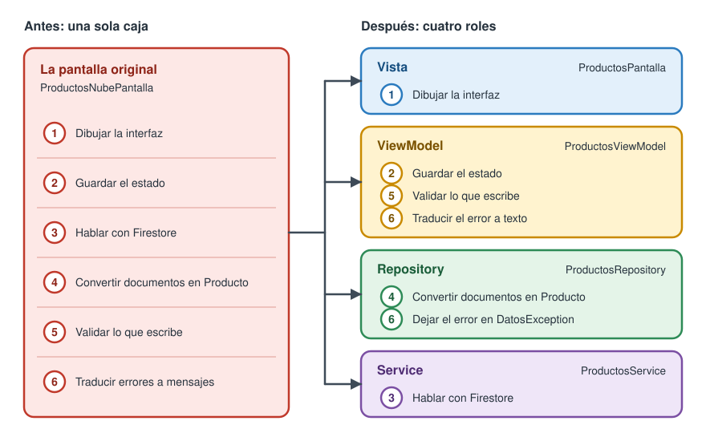
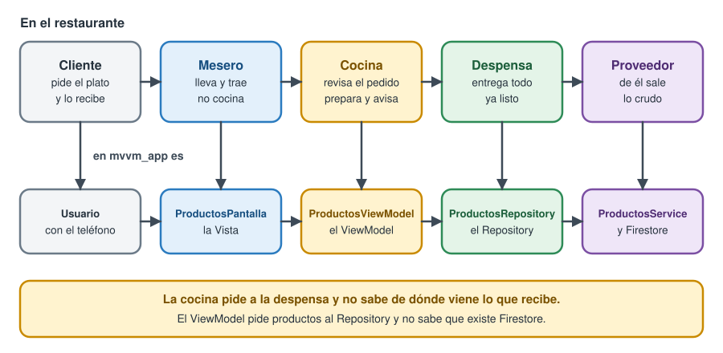
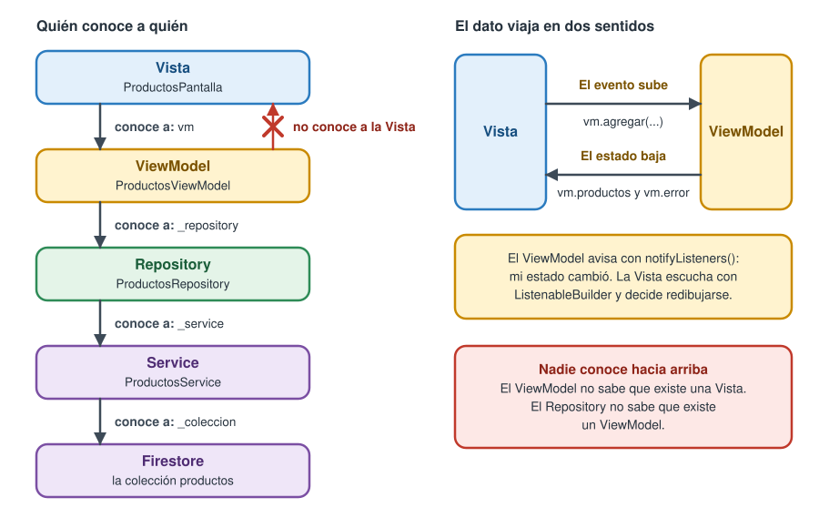
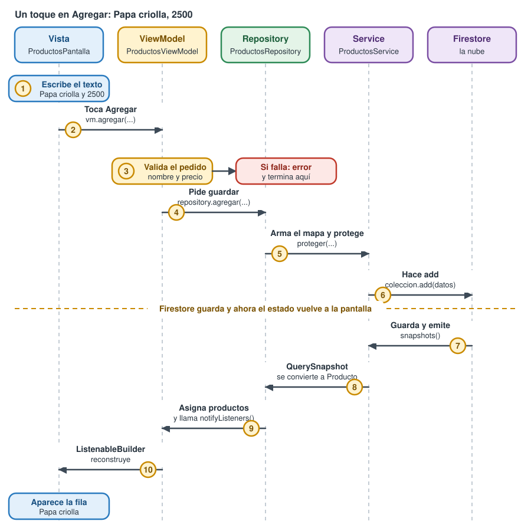
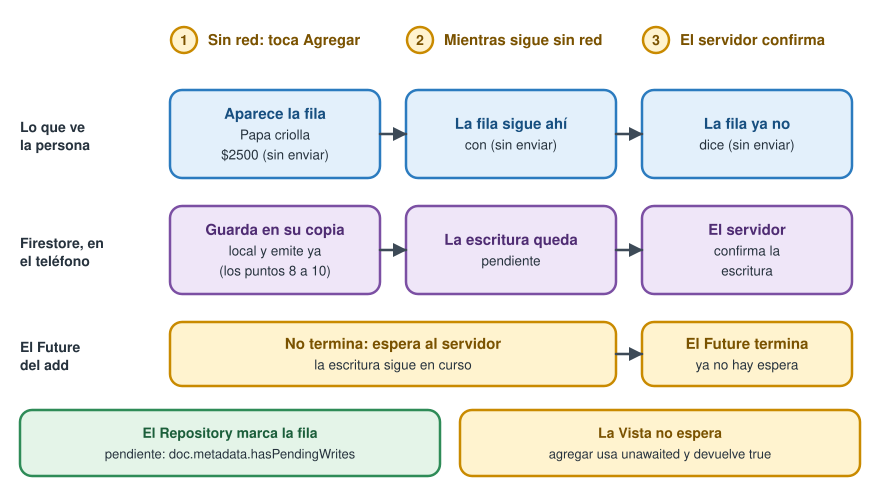
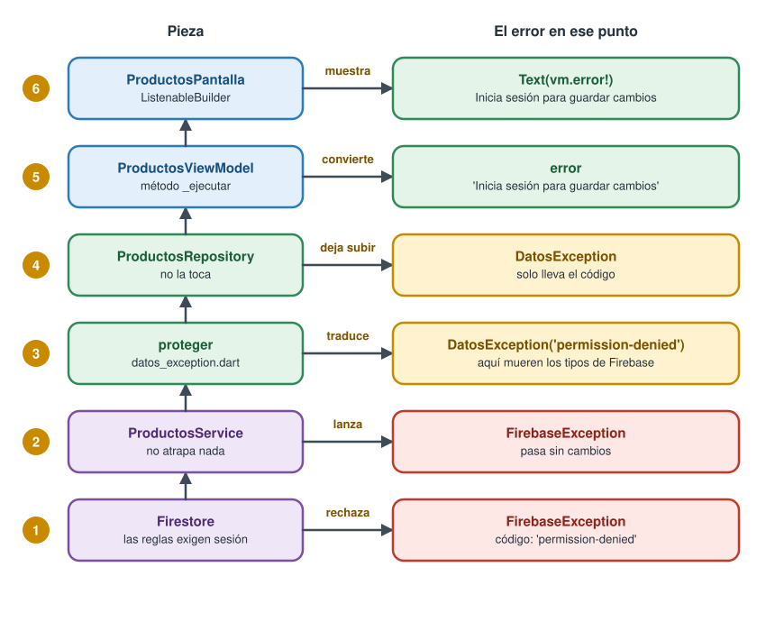
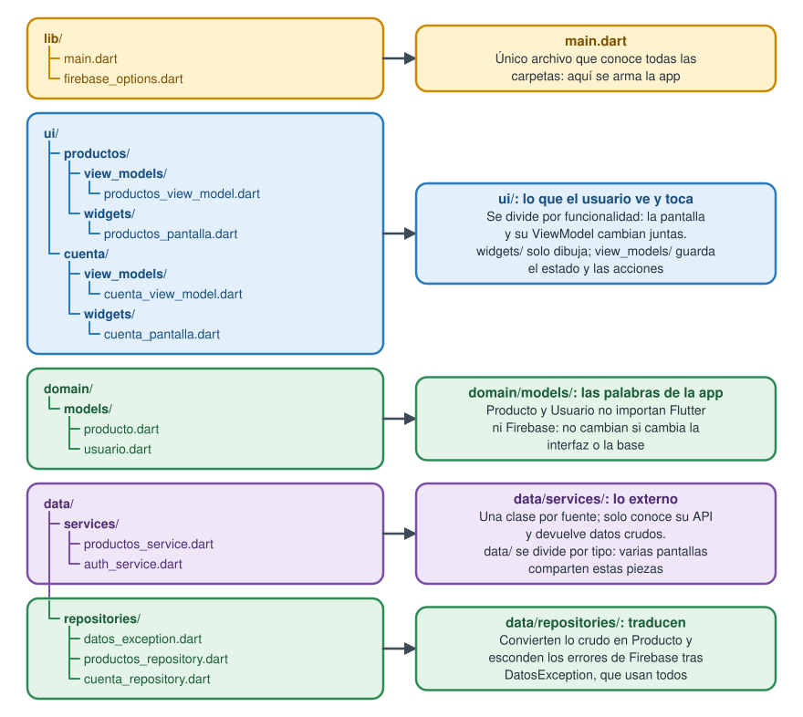
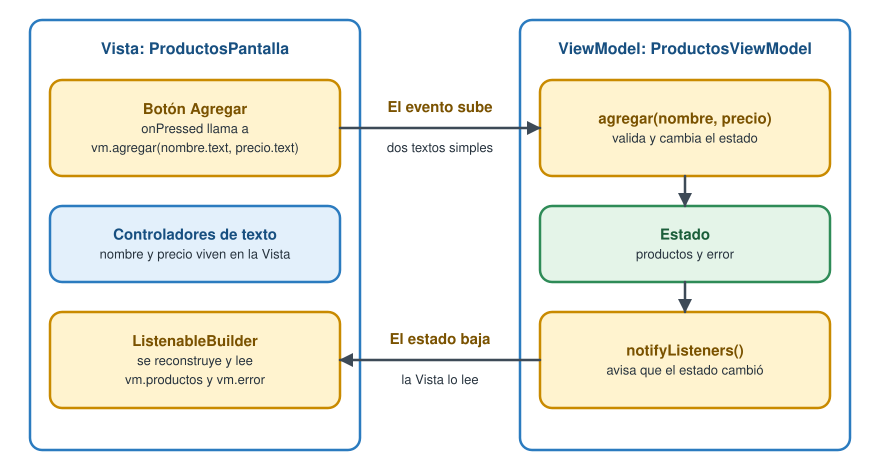
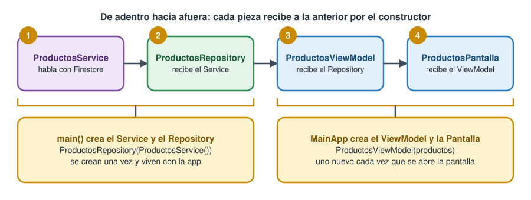
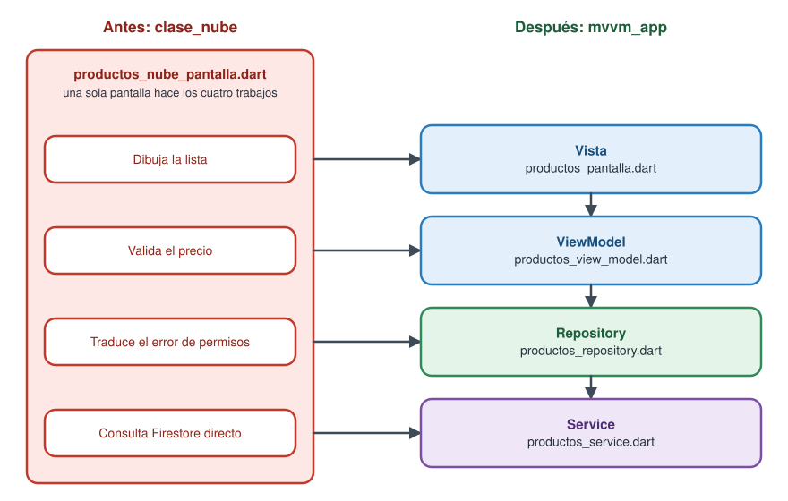

MVVM y Repository Pattern: guía paso a paso
| Qué construyes | mvvm_app, la misma app de productos y cuentas de clase_nube, reorganizada en Vista, ViewModel, Repository y Service, con pruebas que no necesitan Firebase |
| Prerrequisitos | La guía de persistencia local y Firebase: ya tienes una app que guarda productos en Firestore y permite registrar, iniciar y cerrar sesión. No necesitas el código de esa app, se reconstruye aquí |
| Herramientas | Flutter 3.41.9, Dart 3.11.5, VS Code, un emulador o un teléfono con Android, Node.js y una cuenta de Google |
Presentación interactiva: las tres piezas de MVVM en movimiento y el recorrido de un toque en Agregar, de punta a punta
Ya tienes una app que guarda productos en Firestore y permite registrar, iniciar y cerrar sesión. Funciona, pero cada pantalla hace demasiado: dibuja la interfaz, guarda el estado, habla con Firebase, convierte los documentos en objetos, valida lo que escribe el usuario y traduce los errores a mensajes. Esta guía construye la misma funcionalidad con otra organización: Vista, ViewModel y Repository. No se agrega ninguna función nueva; lo que cambia es dónde vive cada trabajo y, por eso, qué archivo hay que abrir cuando algo cambia.
Construyes un proyecto nuevo llamado mvvm_app, desde cero, un archivo a la vez y de adentro hacia afuera: primero lo que no depende de nada (los modelos), al final lo que depende de todo (la pantalla y el main). Así cada archivo que escribes compila apenas lo guardas. En cada paso encuentras qué se hace y por qué, el archivo completo, qué debes ver al terminar, el error más probable y cómo se compara con el código “antes”, el de la pantalla original de clase_nube.
Instalar y preparar
- Versiones. El código de esta guía se verificó con Flutter 3.41.9 (Dart 3.11.5) y con los paquetes en la versión exacta que se indica abajo.
- Dependencias con versión fija.
flutter pub add cloud_firestore:7.1.0 firebase_auth:7.0.1 firebase_core:5.1.0. Sin versión se instala la última, y una versión mayor puede cambiar la API. - Herramientas de Firebase, una sola vez por equipo.
dart pub global activate flutterfire_cliyfirebase login.
Conectar con Firebase
- Conectar la app.
flutterfire configurese ejecuta desde la carpetamvvm_app, después de instalarfirebase_core. Elige el proyecto de Firebase de siempre, deja marcada soloandroidy confirma que el identificador seaco.edu.iue.mvvm_app. Generalib/firebase_options.dartyandroid/app/google-services.json; no se editan a mano. - Consola de Firebase. Authentication con el método de correo y contraseña habilitado. Base de Firestore creada, con la colección
productos. Reglas:allow read: if true;yallow write: if request.auth != null;. Sin esas reglas, o sin sesión iniciada, toda escritura respondepermission-deniedy la app muestra “Inicia sesión para guardar cambios”. - Inicio en
main.dart.WidgetsFlutterBinding.ensureInitialized()yawait Firebase.initializeApp(options: DefaultFirebaseOptions.currentPlatform)van antes derunApp. Sin ellos, Firebase avisa que no existe la app por defecto. - Sin internet. Firestore guarda una copia local en Android: la lista se lee sin conexión y las escrituras quedan pendientes y el producto aparece con “(sin enviar)” mientras el servidor no confirme. El
Futuredeagregarno termina hasta que el servidor confirma, y por eso la vista no espera su resultado.
Probar
- Dónde probar. En el emulador de Android o en un teléfono; el proyecto se crea solo con la plataforma
android. - Comprobaciones.
flutter analyzedebe responderNo issues found!yflutter testdebe pasar. Las pruebas no necesitan Firebase, porque usan un repositorio falso.
Con las versiones fijadas de Firebase, el plugin de Kotlin que genera flutter create (2.2.20) es demasiado viejo: firebase_auth falla con Module was compiled with an incompatible version of Kotlin. En android/settings.gradle.kts cambia la versión del plugin org.jetbrains.kotlin.android a 2.3.21. En android/app/build.gradle.kts quita el bloque kotlinOptions { jvmTarget = ... } y, fuera del bloque android { }, escribe kotlin { compilerOptions { jvmTarget = org.jetbrains.kotlin.gradle.dsl.JvmTarget.JVM_17 } }. Con ese cambio flutter build apk --debug compila (verificado con este proyecto).

La pantalla original hacía seis trabajos a la vez; ahora cada uno vive en un solo rol.
Los seis trabajos de la pantalla original, y el rol que se queda con cada uno al terminar esta guía:
| Trabajo que hacía la pantalla | Dónde cae ahora | Archivo |
|---|---|---|
| Dibujar la interfaz | Vista | ui/productos/widgets/productos_pantalla.dart |
| Guardar el estado (la lista, el error) | ViewModel | ui/productos/view_models/productos_view_model.dart |
| Hablar con Firestore | Service | data/services/productos_service.dart |
Convertir documentos en Producto |
Repository | data/repositories/productos_repository.dart |
| Validar lo que escribe el usuario | ViewModel | ui/productos/view_models/productos_view_model.dart |
| Traducir errores a mensajes | Repository (excepción propia) y ViewModel (texto) | datos_exception.dart y el ViewModel |
Cómo funciona MVVM antes de escribir código
Antes del Paso 0 conviene ver la arquitectura funcionando en el papel: quién hace qué y por dónde viaja un toque del usuario. Esta sección es la versión escrita de las dos diapositivas que explican MVVM en movimiento. No se escribe código todavía; los fragmentos son copias exactas de los archivos que construyes en los pasos 2 a 13, y cada punto del recorrido dice en qué paso de la guía se escribe el archivo.
La analogía del restaurante
Un restaurante separa tres trabajos para que nadie haga todo a la vez. El cliente pide, el mesero lleva y trae, y la cocina decide y prepara. La cocina tampoco compra en el mercado: de eso se encarga la despensa, que a su vez tiene un proveedor.

Cada pieza del restaurante tiene su pareja exacta en mvvm_app.
| En el restaurante | En mvvm_app |
Qué es |
|---|---|---|
| El cliente | El usuario con el teléfono | Quien toca y escribe |
| El mesero | ProductosPantalla, la Vista |
Muestra la carta (la lista) y anota el pedido (lo que se escribe y se toca). No cocina |
| La cocina | ProductosViewModel, el ViewModel |
Revisa el pedido, decide si es válido, lo prepara y avisa cuando el plato está listo. No sale al salón |
| La despensa | ProductosRepository, el Repository |
Entrega los ingredientes ya listos, como Producto. La cocina no sabe de dónde vienen |
| El proveedor | ProductosService y Firestore |
De donde sale el ingrediente crudo. Solo él conoce la nube |
| El plato | Producto, el modelo de dominio |
La palabra que usan todos para hablar de lo mismo |
Lo importante está en la despensa: la cocina pide ingredientes a la despensa y no le importa si el proveedor es una granja o un supermercado. Del mismo modo, el ViewModel pide productos al Repository y no sabe si vienen de Firestore.
Qué hace cada pieza y qué no
| Pieza | Qué hace | Qué NO hace |
|---|---|---|
Vista (ProductosPantalla) |
Dibuja el estado que tiene el ViewModel. Guarda lo que es solo de la interfaz, los controladores de texto. Avisa al ViewModel lo que el usuario tocó | No valida, no decide, no guarda el estado de la app y no habla con Firestore |
ViewModel (ProductosViewModel) |
Guarda el estado (productos y error), valida lo que se escribe, traduce los errores a texto y avisa con notifyListeners() cuando algo cambia |
No importa ningún widget, no conoce la Vista y no conoce Firestore ni sus tipos |
Repository (ProductosRepository) |
Ofrece los datos como Producto, convierte los documentos, arma el mapa que se guarda y deja los errores de Firebase en un DatosException |
No dibuja, no valida lo que escribe el usuario y no decide qué texto ve la persona |
Service (ProductosService) |
Habla con la colección productos de Firestore y devuelve datos crudos |
No convierte, no valida y no atrapa errores |
Modelo de dominio (Producto) |
Representa un producto con sus campos, todos final |
No importa Flutter ni Firebase y no cambia: si algo cambia, llega otro Producto |
Quién conoce a quién
La Vista conoce al ViewModel, el ViewModel conoce al Repository y el Repository conoce al Service. Nadie conoce hacia arriba: el ViewModel no sabe que existe una Vista y el Repository no sabe que existe un ViewModel.

Cada pieza conoce solo a la de abajo; al ViewModel le basta avisar que su estado cambió.
Vista (ProductosPantalla)
| conoce a
v
ViewModel (ProductosViewModel)
| conoce a
v
Repository (ProductosRepository)
| conoce a
v
Service (ProductosService), que habla con FirestoreCada “conoce a” es un campo que la pieza recibe por el constructor, tal como queda escrito en el código:
ProductosViewModel get vm => widget.viewModel; final ProductosRepository _repository; final ProductosService _service;Como el ViewModel no conoce a la Vista, no puede decirle “dibújate de nuevo”. Lo que hace es avisar “mi estado cambió” a quien quiera escuchar, y la Vista es quien decide escuchar. Por eso se dice: los eventos suben, el estado baja.
| Sentido | Qué viaja | Cómo viaja | En el código |
|---|---|---|---|
| Sube (Vista a ViewModel) | El evento: algo que el usuario hizo | Una llamada a una función del ViewModel | vm.agregar(nombre.text, precio.text) |
| Baja (ViewModel a Vista) | El estado: lo que hay que mostrar ahora | El ViewModel llama a notifyListeners() y el ListenableBuilder de la Vista vuelve a ejecutar su builder |
vm.productos y vm.error |
El estado nunca se le entrega a la Vista como respuesta de una función: la Vista lo lee del ViewModel cada vez que se redibuja. Con eso, la Vista es una función del estado: el mismo estado produce siempre la misma pantalla.
Recorrido de un toque en Agregar, de punta a punta
El usuario escribe Papa criolla y 2500 y toca Agregar. Estos son los diez puntos, en el orden exacto en que ocurren, con la línea real que ejecuta cada uno.

Los diez pasos de un toque en Agregar, con el evento hacia Firestore y el estado de vuelta a la pantalla.
1. El usuario escribe. Los dos campos de texto tienen un TextEditingController. Ellos guardan lo escrito dentro de la Vista; todavía no existe ningún evento. Archivo ProductosPantalla (clase _ProductosPantallaState). Se escribe en el paso 11 de la guía.
final nombre = TextEditingController();
final precio = TextEditingController();2. Toca Agregar y el evento sube. El botón llama al método agregar de la Vista, que le pasa el texto crudo al ViewModel con vm.agregar(...). Este es el evento que sube. Archivo ProductosPantalla, método agregar. Se escribe en el paso 11 de la guía.
void agregar() {
if (vm.agregar(nombre.text, precio.text)) {
nombre.clear();
precio.clear();
}
}3. El ViewModel valida. Intenta convertir el precio con int.tryParse y comprueba que el nombre no esté vacío y que el precio sea mayor que cero. Si algo falla, asigna error, notifica y devuelve false: ahí termina el recorrido y la Vista muestra el mensaje. Archivo ProductosViewModel, método agregar. Se escribe en el paso 9 de la guía.
final valor = int.tryParse(precio);
if (nombre.trim().isEmpty || valor == null || valor <= 0) {
error = 'Escribe un nombre y un precio mayor que cero';
_notificar();
return false;
}4. Si es válido, llama al Repository. El ViewModel no espera el resultado: lanza la escritura con unawaited y devuelve true de inmediato, por eso la Vista vacía los campos. Archivo ProductosViewModel, método agregar. Se escribe en el paso 9 de la guía.
unawaited(_ejecutar(() => _repository.agregar(nombre.trim(), valor)));5. El Repository arma el mapa y protege la llamada. Convierte los valores en el formato que se guarda en Firestore y llama al Service dentro de proteger, que convertirá cualquier error de Firebase en un DatosException. Archivo ProductosRepository, método agregar. Se escribe en el paso 7 de la guía; proteger se escribe en el paso 6 de la guía.
return proteger(
() => _service.agregar({
'nombre': nombre,
'precio': precio,
'disponible': true,
}),6. El Service hace add en Firestore. Es la única línea de la app que agrega un documento a la colección. Aquí el pedido sale del teléfono hacia la nube. Archivo ProductosService, método agregar. Se escribe en el paso 4 de la guía.
Future<void> agregar(Map<String, dynamic> datos) => _coleccion.add(datos);7. Firestore guarda y emite el cambio. Firestore avisa a quien esté escuchando la colección: el flujo snapshots() entrega un nuevo QuerySnapshot con todos los documentos. Este es el camino de vuelta: el dato regresa como estado, no como respuesta del add. Archivo ProductosService, método observar. Se escribe en el paso 4 de la guía.
Stream<QuerySnapshot<Map<String, dynamic>>> observar() {
return _coleccion.snapshots();
}8. El Repository convierte cada documento en Producto. Recibe el QuerySnapshot crudo y entrega una List<Producto>; el ViewModel nunca ve un documento. Archivo ProductosRepository, método observar (la conversión de cada documento está en _aProducto). Se escribe en el paso 7 de la guía.
Stream<List<Producto>> observar() {
return _service.observar().map(
(datos) => [for (final doc in datos.docs) _aProducto(doc)],
);
}9. El ViewModel asigna productos y notifica. La lista nueva queda en el estado y _notificar() llama a notifyListeners(). El estado baja. Archivo ProductosViewModel, constructor. Se escribe en el paso 9 de la guía.
(lista) {
productos = lista;
_notificar();
},10. ListenableBuilder reconstruye. Como la Vista escucha al ViewModel, vuelve a ejecutar el builder, lee vm.productos y la fila Papa criolla aparece. Archivo ProductosPantalla, método build. Se escribe en el paso 11 de la guía.
child: ListenableBuilder(
listenable: vm,
builder: (context, _) {
final lista = vm.productos;En resumen: el evento sube por los puntos 1 a 6 (Vista, ViewModel, Repository, Service, Firestore) y el estado baja por los puntos 7 a 10 (Firestore, Service, Repository, ViewModel, Vista). Por eso la Vista nunca pregunta “¿ya se guardó?”: solo dibuja el estado cuando le llega.
Por último, la pieza que une todo es main.dart (paso 13 de la guía): crea el Service, con él el Repository, y entrega el Repository al ViewModel cuando se abre la pantalla. Ninguna de las otras piezas crea a la que tiene abajo.
Sin internet
Con el teléfono sin conexión, el recorrido llega hasta el punto 6 y se comporta distinto. Firestore guarda el cambio en su copia local y emite enseguida el punto 7 desde esa copia, así que los puntos 8 a 10 ocurren aunque el servidor no haya confirmado. El Repository marca el producto como pendiente con una sola línea:

Sin red la fila aparece pendiente al instante, y el Future espera al servidor sin detener la pantalla.
pendiente: doc.metadata.hasPendingWrites,La Vista usa ese campo para mostrar el texto “(sin enviar)” junto al precio:
subtitle: Text(
p.pendiente ? '\$${p.precio} (sin enviar)' : '\$${p.precio}',
),El Future del add no termina hasta que el servidor confirma. Por eso el punto 4 usa unawaited y devuelve true sin esperar: si la Vista esperara, la pantalla quedaría detenida mientras no haya red. Mientras el servidor no confirme, el producto sigue marcado como pendiente.
Recorrido de un error: permission-denied
Sin sesión iniciada, las reglas de Firestore rechazan la escritura. El error viaja en sentido contrario al evento, y en cada pieza cambia de forma:

El error sube por las capas y cambia de forma en cada una, hasta quedar convertido en el texto que lee la persona.
- Firestore y el Service. El
addfalla con unaFirebaseExceptioncuyo código espermission-denied. El Service no atrapa nada y la deja pasar. - El Repository.
protegerla atrapa y la convierte en unDatosExceptionque lleva solo el código. Aquí mueren los tipos de Firebase. Archivodatos_exception.dart, funciónproteger. Se escribe en el paso 6 de la guía.
try {
await accion();
} on FirebaseException catch (e) {
throw DatosException(e.code);
}- El ViewModel.
_ejecutaratrapa elDatosException, traduce el código a un texto para la persona y notifica. Comoagregarlanzó_ejecutarconunawaited, el error se maneja aquí adentro y no escapa. ArchivoProductosViewModel, método_ejecutar. Se escribe en el paso 9 de la guía.
} on DatosException catch (e) {
error = e.codigo == 'permission-denied'
? 'Inicia sesión para guardar cambios'
: 'Error: ${e.codigo}';
_notificar();- La Vista. Al notificar, el
ListenableBuilderse ejecuta de nuevo y la líneaif (vm.error != null) Text(vm.error!)muestra “Inicia sesión para guardar cambios”.
if (vm.error != null) Text(vm.error!),El texto del mensaje vive en un solo lugar, el ViewModel. El Repository solo deja pasar el código, y la Vista solo muestra lo que hay en error. Si mañana el mensaje cambia, se edita _ejecutar y no se toca ninguna otra pieza.
Paso 0. Crear el proyecto, las dependencias y la conexión a Firebase
Qué se hace: crear el proyecto, instalar los tres paquetes de Firebase con versión fija y conectarlo con el proyecto de Firebase que ya usaste.
flutter create --empty --org co.edu.iue --platforms=android mvvm_app
cd mvvm_app
flutter pub add cloud_firestore:7.1.0 firebase_auth:7.0.1 firebase_core:5.1.0--emptydejalib/main.dartcasi vacío, sin la app del contador.--org co.edu.iuedefine el identificador de la app en Android:co.edu.iue.mvvm_app. Ese identificador se registra en Firebase y no conviene cambiarlo después.flutter pub addescribe los paquetes enpubspec.yamly los descarga. Las versiones van fijas porque el código de esta guía se verificó con ellas; sin versión se instalaría la última, y una versión mayor puede cambiar la API.
Al terminar, la sección dependencies: de pubspec.yaml queda así (el resto del archivo lo escribe flutter create; no lo cambies):
pubspec.yaml
dependencies:
cloud_firestore: 7.1.0
firebase_auth: 7.0.1
firebase_core: 5.1.0
flutter:
sdk: flutterConexión a Firebase. Esta guía no repite cómo crear el proyecto en la consola de Firebase, activar Authentication, crear la base de Firestore ni publicar sus reglas: eso está en la guía de persistencia local y nube, en las etapas de Firebase y Authentication y de Firestore. Si ya hiciste esas etapas con clase_nube, reutiliza el mismo proyecto de Firebase. Lo único que repites es conectar esta app nueva, desde la carpeta mvvm_app:
flutterfire configureEn las preguntas, elige el proyecto de Firebase de siempre, deja marcada solo android y comprueba que el identificador sea co.edu.iue.mvvm_app. El comando genera lib/firebase_options.dart, genera android/app/google-services.json y ajusta los archivos de Gradle. El archivo firebase_options.dart se genera ahí: no se escribe ni se edita a mano, y por eso esta guía no lo muestra.
Qué debe verse al terminar: existen lib/firebase_options.dart y android/app/google-services.json, y flutter analyze responde No issues found!.
Error más probable: ejecutar flutterfire configure antes de instalar firebase_core. El archivo generado queda con el error Target of URI doesn't exist: 'package:firebase_core/firebase_core.dart'. Se arregla instalando el paquete y volviendo a ejecutar flutter pub get. Otro error común es no tener las reglas de Firestore de la guía anterior: sin ellas, la app corre pero toda escritura falla con permission-denied.
No toques lib/main.dart hasta el paso 13; mientras tanto, la app sigue mostrando la pantalla vacía que dejó flutter create.
Paso 1. La estructura de carpetas, y por qué es así
Qué se hace: crear las carpetas vacías dentro de lib. Antes de escribir una sola línea de lógica, el proyecto ya dice dónde va cada cosa.

Cada carpeta tiene su color de capa y una razón para existir: la dirección de las dependencias empieza en ui y termina en data.
lib
+-- main.dart
+-- firebase_options.dart
+-- domain
| +-- models
| +-- producto.dart
| +-- usuario.dart
+-- data
| +-- services
| | +-- productos_service.dart
| | +-- auth_service.dart
| +-- repositories
| +-- datos_exception.dart
| +-- productos_repository.dart
| +-- cuenta_repository.dart
+-- ui
+-- productos
| +-- view_models
| | +-- productos_view_model.dart
| +-- widgets
| +-- productos_pantalla.dart
+-- cuenta
+-- view_models
| +-- cuenta_view_model.dart
+-- widgets
+-- cuenta_pantalla.dartCada carpeta existe por una razón:
uiguarda lo que el usuario ve y toca. Se divide por funcionalidad (productos,cuenta) porque cada funcionalidad tiene su propia pantalla y su propio ViewModel, y esas dos piezas cambian juntas: si cambia la pantalla de productos, no abres nada decuenta.ui/<funcionalidad>/widgetsguarda la Vista: los widgets que dibujan. Aquí no hay lógica, solo interfaz.ui/<funcionalidad>/view_modelsguarda el ViewModel: el estado de la pantalla y las acciones que el usuario puede hacer. No dibuja nada y no importa ningún widget.domain/modelsguarda el modelo de dominio:ProductoyUsuario, las palabras que usa la app para hablar de sus cosas. No importan Flutter ni Firebase, así que no cambian cuando cambia la interfaz o la base.dataguarda todo lo que sabe de dónde vienen y adónde van los datos. Se divide por tipo (servicesyrepositories) y no por funcionalidad, porque estas piezas se comparten: en una app más grande, varias pantallas leen los mismos productos, y la traducción de errores dedatos_exception.dartla usan todos los repositorios.data/servicesguarda los Services: una clase por fuente externa (Firestore, Authentication) que solo conoce la API de esa fuente y devuelve datos crudos.data/repositoriesguarda los Repository: reciben los datos crudos del Service, los convierten a modelos de dominio y esconden los errores de Firebase detrás de una excepción propia.main.dartqueda en la raíz porque es el único archivo que conoce todas las carpetas: es donde se arma la app.
La regla que hace que el orden tenga sentido es la dirección de las dependencias: la Vista conoce al ViewModel; el ViewModel conoce al Repository y a los modelos; el Repository conoce al Service y a los modelos; el Service solo conoce a Firebase. Nunca al revés, y la Vista jamás importa un Service.
Qué debe verse al terminar: en el explorador del editor, las carpetas domain/models, data/services, data/repositories, ui/productos/view_models, ui/productos/widgets, ui/cuenta/view_models y ui/cuenta/widgets dentro de lib.
Error más probable: poner todo plano en lib, o crear ui/view_models y ui/widgets sin separar por funcionalidad. Funciona, pero cuando agregues una tercera pantalla ya no sabrás qué ViewModel va con qué Vista. También fallan los nombres con mayúsculas o tildes: en Dart los archivos van en minúsculas y con guion bajo.
Contraste con el “antes”: en clase_nube no había carpetas para esto. productos_nube_pantalla.dart (120 líneas) y cuenta.dart (121 líneas) vivían junto a producto_nube.dart en lib, y cada pantalla era a la vez Vista, ViewModel, Repository y Service.
Paso 2. El modelo de dominio Producto
Qué se hace: crear el objeto que representa un producto en toda la app.
lib/domain/models/producto.dart
class Producto {
const Producto({
required this.id,
required this.nombre,
required this.precio,
required this.disponible,
this.pendiente = false,
});
final String id;
final String nombre;
final int precio;
final bool disponible;
final bool pendiente;
}Por qué así:
- Todos los campos son
finaly el constructor esconst: unProductono cambia; si cambia algo, llega otroProductodesde la base. idesStringporque Firestore genera ids de texto. Si copias elProductode la etapa de SQLite, ahí el id eraint.pendienteempieza enfalse. Serátruecuando el producto se guardó en el teléfono pero el servidor todavía no lo confirmó; la Vista usará ese dato para mostrar “(sin enviar)”.- El archivo no tiene ningún
import: no sabe que existe Firestore. Esa ignorancia es lo que permite cambiar la base sin tocarlo.
Qué debe verse al terminar: flutter analyze sin problemas. Todavía no hay nada que ejecutar.
Error más probable: olvidar required en un campo y que el editor marque error al construir un Producto más adelante.
Contraste con el “antes”: el modelo era ProductoNube (producto_nube.dart, líneas 3 a 25) y tenía un factory ProductoNube.fromDoc(DocumentSnapshot...) que leía el documento de Firestore (líneas 15 a 24), así que el archivo importaba cloud_firestore: el modelo conocía a la base. Además, el dato de “sin enviar” no estaba en el modelo; la pantalla lo leía directo del documento (doc.metadata.hasPendingWrites, línea 110 de productos_nube_pantalla.dart). Ahora la conversión se mudó al Repository (paso 7) y Producto quedó limpio.
Paso 3. El modelo de dominio Usuario
Qué se hace: crear el objeto que representa a quien tiene la sesión iniciada.
lib/domain/models/usuario.dart
class Usuario {
const Usuario(this.correo);
final String correo;
}Por qué así: la app solo necesita saber el correo de quien inició sesión. Firebase entrega un objeto User con muchos más datos; Usuario es lo único que el resto de la app va a conocer. Si la cuenta pasa a manejarse con otro proveedor, la Vista y el ViewModel siguen igual.
Qué debe verse al terminar: flutter analyze sin problemas.
Error más probable: ninguno propio de este archivo. Lo habitual es dudar de que una clase tan pequeña valga un archivo; vale: es la frontera entre lo que entrega Firebase y lo que usa la app.
Contraste con el “antes”: cuenta.dart usaba el User de Firebase directamente en la interfaz: StreamBuilder<User?> y usuario.email (líneas 74 a 81). La pantalla dependía del tipo del paquete.
Paso 4. El Service de productos
Qué se hace: crear la única clase que habla con la colección productos de Firestore.
lib/data/services/productos_service.dart
import 'package:cloud_firestore/cloud_firestore.dart';
class ProductosService {
final _coleccion = FirebaseFirestore.instance.collection('productos');
Stream<QuerySnapshot<Map<String, dynamic>>> observar() {
return _coleccion.snapshots();
}
Future<void> agregar(Map<String, dynamic> datos) => _coleccion.add(datos);
Future<void> actualizar(String id, Map<String, dynamic> datos) {
return _coleccion.doc(id).update(datos);
}
Future<void> borrar(String id) => _coleccion.doc(id).delete();
}Por qué así:
- Es un Service: solo conoce la API de Firestore. Recibe y devuelve datos crudos (
Map<String, dynamic>yQuerySnapshot), noProducto. - No valida, no convierte y no atrapa errores. Cada una de esas decisiones pertenece a otra capa.
- Es el único lugar donde aparece el nombre de la colección,
'productos'. Si la colección cambia de nombre, se edita una línea en un archivo. _coleccionse calcula al crear el Service, y eso exige que Firebase ya esté inicializado en ese momento. Por eso elmain(paso 13) inicializa Firebase antes de crear el Service.
Qué debe verse al terminar: flutter analyze sin problemas.
Error más probable: crear el Service antes de que termine Firebase.initializeApp; en ejecución aparece No Firebase App '[DEFAULT]' has been created.
Contraste con el “antes”: estas cuatro operaciones estaban repartidas dentro de la pantalla: la colección en la línea 13 de productos_nube_pantalla.dart, el snapshots() en la línea 71, el add en la línea 40, el update en la línea 106 y el delete en la línea 116. Cada operación quedaba mezclada con widgets.
Paso 5. El Service de cuenta
Qué se hace: crear la clase que habla con Firebase Authentication.
lib/data/services/auth_service.dart
import 'package:firebase_auth/firebase_auth.dart';
class AuthService {
final _auth = FirebaseAuth.instance;
Stream<User?> sesion() => _auth.authStateChanges();
Future<void> registrar(String correo, String clave) {
return _auth.createUserWithEmailAndPassword(email: correo, password: clave);
}
Future<void> iniciar(String correo, String clave) {
return _auth.signInWithEmailAndPassword(email: correo, password: clave);
}
Future<void> salir() => _auth.signOut();
}Por qué así: igual que el Service anterior, solo expone las operaciones de Authentication con su API original. sesion() entrega el flujo de User? de Firebase; quien lo consuma (el Repository, en el paso 8) lo convertirá en Usuario. El tipo User no sale de la carpeta data.
Qué debe verse al terminar: flutter analyze sin problemas.
Error más probable: el mismo del paso 4: crear AuthService antes de inicializar Firebase, porque FirebaseAuth.instance se pide al construirlo.
Contraste con el “antes”: cuenta.dart tenía final auth = FirebaseAuth.instance; en la línea 12 y llamaba a auth.createUserWithEmailAndPassword (línea 19), auth.signInWithEmailAndPassword (línea 28), auth.authStateChanges() (línea 75) y auth.signOut (línea 83), todo dentro de la clase de la pantalla.
Paso 6. La excepción propia y proteger
Qué se hace: crear DatosException y la función proteger, el único punto donde se atrapan los errores de Firebase.
lib/data/repositories/datos_exception.dart
import 'package:firebase_core/firebase_core.dart';
class DatosException implements Exception {
const DatosException(this.codigo);
final String codigo;
}
Future<void> proteger(Future<void> Function() accion) async {
try {
await accion();
} on FirebaseException catch (e) {
throw DatosException(e.code);
}
}Por qué así:
DatosExceptionlleva solo elcodigodel error (por ejemplopermission-denied). Es el idioma de errores de la app: el ViewModel atrapaDatosException, nuncaFirebaseException.protegerrecibe una función (Future<void> Function()), no unFutureya iniciado. Por eso ejecuta la acción dentro deltry: si la acción ya estuviera corriendo, el error escaparía antes de entrar.- Se atrapa
FirebaseExceptionporque es la clase base:FirebaseAuthExceptiontambién es unFirebaseException, así queprotegersirve para productos y para cuenta. - Vive en
data/repositoriesporque la usan todos los Repository, y porque es el límite: los errores de Firebase mueren aquí y no suben. - Solo protege las acciones que devuelven
Future<void>. Los errores de un flujo (la lectura en vivo de productos) no pasan por aquí: llegan alonErrordel ViewModel.
Qué debe verse al terminar: flutter analyze sin problemas.
Error más probable: pasar la llamada ya hecha en lugar de la función, como proteger(_service.salir()). El editor lo marca como error de tipo; lo correcto es pasar la función sin paréntesis (_service.salir) o dentro de una flecha (() => _service.registrar(...)).
Contraste con el “antes”: el try y el on FirebaseException catch (e) estaban dentro de probar, un método de cada pantalla (líneas 18 a 30 de productos_nube_pantalla.dart y líneas 35 a 42 de cuenta.dart). Eran dos copias del mismo mecanismo, una con FirebaseException y otra con FirebaseAuthException. Ahora hay una sola.
Paso 7. El Repository de productos
Qué se hace: crear la clase que ofrece los productos al resto de la app como Producto, sin que se note Firestore.
lib/data/repositories/productos_repository.dart
import 'package:cloud_firestore/cloud_firestore.dart';
import 'package:mvvm_app/data/repositories/datos_exception.dart';
import 'package:mvvm_app/data/services/productos_service.dart';
import 'package:mvvm_app/domain/models/producto.dart';
class ProductosRepository {
ProductosRepository(this._service);
final ProductosService _service;
Stream<List<Producto>> observar() {
return _service.observar().map(
(datos) => [for (final doc in datos.docs) _aProducto(doc)],
);
}
Future<void> agregar(String nombre, int precio) {
return proteger(
() => _service.agregar({
'nombre': nombre,
'precio': precio,
'disponible': true,
}),
);
}
Future<void> cambiarDisponible(String id, bool disponible) {
return proteger(() => _service.actualizar(id, {'disponible': disponible}));
}
Future<void> borrar(String id) => proteger(() => _service.borrar(id));
Producto _aProducto(QueryDocumentSnapshot<Map<String, dynamic>> doc) {
final d = doc.data();
return Producto(
id: doc.id,
nombre: d['nombre'] as String,
precio: d['precio'] as int,
disponible: d['disponible'] as bool,
pendiente: doc.metadata.hasPendingWrites,
);
}
}Por qué así:
- Recibe el Service por el constructor (
ProductosRepository(this._service)): no lo crea él. Quien arma la app decide qué Service le da. observar()toma el flujo crudo del Service y lo convierte: cada actualización de Firestore sale como unaList<Producto>. El ViewModel nunca ve un documento.agregararma el mapa que se guarda, con'disponible': truepara todo producto nuevo. El formato de los datos en Firestore se decide solo en este archivo.agregar,cambiarDisponibleyborrarpasan porproteger, así que fallan conDatosException._aProductoes la conversión: lee los campos del documento y copiadoc.metadata.hasPendingWritesal campopendiente.
Qué debe verse al terminar: flutter analyze sin problemas.
Error más probable: type 'double' is not a subtype of type 'int' in type cast en _aProducto, cuando alguien escribió el precio con decimales a mano en la consola de Firestore. El código asume que precio es entero, como lo guarda la app.
Contraste con el “antes”: la conversión estaba en ProductoNube.fromDoc (producto_nube.dart) y se llamaba desde la pantalla (línea 101 de productos_nube_pantalla.dart); el armado del mapa estaba en agregar de la pantalla (líneas 33 a 37); y el StreamBuilder consumía QuerySnapshot directamente (líneas 70 a 76). Ahora esos tres trabajos están en un solo archivo que no dibuja nada.
Paso 8. El Repository de cuenta
Qué se hace: crear la clase que ofrece la sesión y las acciones de cuenta sin exponer los tipos de Firebase.
lib/data/repositories/cuenta_repository.dart
import 'package:mvvm_app/data/repositories/datos_exception.dart';
import 'package:mvvm_app/data/services/auth_service.dart';
import 'package:mvvm_app/domain/models/usuario.dart';
class CuentaRepository {
CuentaRepository(this._service);
final AuthService _service;
Stream<Usuario?> sesion() {
return _service.sesion().map(
(user) => user == null ? null : Usuario(user.email ?? ''),
);
}
Future<void> registrar(String correo, String clave) {
return proteger(() => _service.registrar(correo, clave));
}
Future<void> iniciar(String correo, String clave) {
return proteger(() => _service.iniciar(correo, clave));
}
Future<void> salir() => proteger(_service.salir);
}Por qué así:
sesion()convierte el flujo deUser?de Firebase en un flujo deUsuario?:nullsignifica que no hay sesión. Si Firebase no entrega correo, se usa un texto vacío.registrar,iniciarysalirpasan porproteger, igual que en productos. Fíjate enproteger(_service.salir): se pasa la función sin paréntesis.- Este Repository no sabe qué mensaje verá el usuario; solo deja pasar el código del error.
Qué debe verse al terminar: flutter analyze sin problemas.
Error más probable: escribir Usuario(correo: ...). El constructor de Usuario recibe el correo como parámetro posicional, sin nombre.
Contraste con el “antes”: registrar e iniciar vivían en la pantalla (líneas 17 a 33 de cuenta.dart) y atrapaban FirebaseAuthException en la línea 39. La pantalla además decidía el formato del correo con correo.text.trim(); ese recorte ahora está en el ViewModel (paso 10).
Paso 9. El ViewModel de productos
Qué se hace: crear la clase que guarda el estado de la pantalla de productos y ofrece las acciones que el usuario puede hacer.
lib/ui/productos/view_models/productos_view_model.dart
import 'dart:async';
import 'package:flutter/foundation.dart';
import 'package:mvvm_app/data/repositories/datos_exception.dart';
import 'package:mvvm_app/data/repositories/productos_repository.dart';
import 'package:mvvm_app/domain/models/producto.dart';
class ProductosViewModel extends ChangeNotifier {
ProductosViewModel(this._repository) {
_suscripcion = _repository.observar().listen(
(lista) {
productos = lista;
_notificar();
},
onError: (_) {
productos = const [];
error = 'No se pudo leer los productos';
_notificar();
},
);
}
final ProductosRepository _repository;
late final StreamSubscription<List<Producto>> _suscripcion;
bool _cerrado = false;
List<Producto>? productos;
String? error;
bool agregar(String nombre, String precio) {
final valor = int.tryParse(precio);
if (nombre.trim().isEmpty || valor == null || valor <= 0) {
error = 'Escribe un nombre y un precio mayor que cero';
_notificar();
return false;
}
unawaited(_ejecutar(() => _repository.agregar(nombre.trim(), valor)));
return true;
}
Future<void> cambiarDisponible(String id, bool disponible) {
return _ejecutar(() => _repository.cambiarDisponible(id, disponible));
}
Future<void> borrar(String id) => _ejecutar(() => _repository.borrar(id));
Future<void> _ejecutar(Future<void> Function() accion) async {
error = null;
_notificar();
try {
await accion();
} on DatosException catch (e) {
error = e.codigo == 'permission-denied'
? 'Inicia sesión para guardar cambios'
: 'Error: ${e.codigo}';
_notificar();
}
}
void _notificar() {
if (!_cerrado) notifyListeners();
}
@override
void dispose() {
_cerrado = true;
_suscripcion.cancel();
super.dispose();
}
}Por qué así:
- Extiende
ChangeNotifier: cuando su estado cambia llama anotifyListeners()(dentro de_notificar), y quien lo escuche se redibuja. Es el mecanismo del que se cuelga la Vista. - El estado son dos campos públicos:
productosyerror.productosvalenullmientras carga; la Vista lo usa para mostrar el indicador de progreso. Si la lectura falla,productospasa a lista vacía yerrorexplica por qué, para que el indicador no quede girando para siempre. agregares donde cae la validación: el nombre no puede estar vacío y el precio debe ser un entero mayor que cero. Si no se cumple, deja el mensaje enerrory devuelvefalse, y no llama al Repository. Si se cumple, devuelvetrue.agregardevuelve unboolde inmediato en lugar de unFutureporque la escritura de Firestore, sin internet, no termina hasta que el servidor confirma. Por eso la llamada va conunawaited: la pantalla no se queda esperando; el producto aparece enseguida conpendienteentrue._ejecutares el equivalente deprobar: limpia el error, ejecuta la acción y, si llega unDatosException, lo traduce a texto para el usuario. Es el único lugar con ese texto._cerradoy_notificarevitan llamar anotifyListeners()después dedispose(). Una escritura puede terminar cuando la pantalla ya se cerró.disposecancela la suscripción al flujo del Repository. Sin eso, la lectura seguiría activa con la pantalla cerrada.- No importa
package:flutter/material.dart. Solofoundation.dart(paraChangeNotifier). Un ViewModel sin widgets se puede probar sin pantalla (paso 14).
Qué debe verse al terminar: flutter analyze sin problemas.
Error más probable: olvidar el dispose. No marca error; el síntoma es que, tras abrir y cerrar la pantalla varias veces, hay varias suscripciones vivas leyendo la base.
Contraste con el “antes”: aquí se juntan cuatro trabajos que estaban en _ProductosNubePantallaState. La variable error era la línea 16; probar ocupaba las líneas 18 a 30, con el texto 'Inicia sesión para guardar cambios' dentro de la clase de la pantalla; agregar tomaba int.tryParse(precio.text) ?? 0 (línea 35), de modo que un precio inválido se guardaba como cero sin avisar; y los campos se vaciaban antes de saber si se guardó (líneas 38 y 39). La comprobación if (!mounted) return; de la línea 23 se reemplaza por _cerrado.
Paso 10. El ViewModel de cuenta
Qué se hace: crear el ViewModel de la pantalla de cuenta, con el mismo molde que el anterior.
lib/ui/cuenta/view_models/cuenta_view_model.dart
import 'dart:async';
import 'package:flutter/foundation.dart';
import 'package:mvvm_app/data/repositories/cuenta_repository.dart';
import 'package:mvvm_app/data/repositories/datos_exception.dart';
import 'package:mvvm_app/domain/models/usuario.dart';
class CuentaViewModel extends ChangeNotifier {
CuentaViewModel(this._repository) {
_suscripcion = _repository.sesion().listen((u) {
usuario = u;
_notificar();
});
}
final CuentaRepository _repository;
late final StreamSubscription<Usuario?> _suscripcion;
bool _cerrado = false;
Usuario? usuario;
String? error;
Future<void> registrar(String correo, String clave) {
return _ejecutar(() => _repository.registrar(correo.trim(), clave));
}
Future<void> iniciar(String correo, String clave) {
return _ejecutar(() => _repository.iniciar(correo.trim(), clave));
}
Future<void> salir() => _ejecutar(_repository.salir);
Future<void> _ejecutar(Future<void> Function() accion) async {
error = null;
_notificar();
try {
await accion();
} on DatosException catch (e) {
error = _mensajeDe(e.codigo);
_notificar();
}
}
String _mensajeDe(String codigo) {
switch (codigo) {
case 'email-already-in-use':
return 'Ese correo ya tiene una cuenta';
case 'weak-password':
return 'La contraseña es muy corta: usa al menos 6 caracteres';
case 'invalid-email':
return 'El correo no tiene un formato válido';
case 'invalid-credential':
return 'Correo o contraseña incorrectos';
case 'network-request-failed':
return 'Sin conexión: revisa tu internet';
default:
return 'Error: $codigo';
}
}
void _notificar() {
if (!_cerrado) notifyListeners();
}
@override
void dispose() {
_cerrado = true;
_suscripcion.cancel();
super.dispose();
}
}Por qué así:
- El estado es
usuario(nulo si no hay sesión) yerror. El constructor escuchasesion()del Repository: cada cambio de sesión actualizausuarioy avisa a la Vista. registrareiniciarrecortan los espacios del correo contrim(). Es una regla de entrada, y por eso está aquí y no en la pantalla._mensajeDetraduce cada código de error al texto para el usuario. Es el mismo texto de siempre; solo cambió de archivo._ejecutar,_notificar,_cerradoydisposecumplen el mismo papel que en el ViewModel de productos (paso 9).
Qué debe verse al terminar: flutter analyze sin problemas.
Error más probable: escribir _repository.salir() con paréntesis al llamar a _ejecutar. _ejecutar espera una función, no el resultado de llamarla; se pasa como _repository.salir.
Contraste con el “antes”: mensajeDe vivía en la pantalla (líneas 44 a 59 de cuenta.dart), junto con probar (líneas 35 a 42) y setState para el error (líneas 36 y 40). El if (mounted) de la línea 40 vuelve a ser _cerrado. Comparado con la pantalla de productos, probar estaba repetido casi igual: ahora cada ViewModel tiene su _ejecutar, con la parte de Firebase ya resuelta por proteger.
Paso 11. La Vista de productos
Qué se hace: crear la pantalla que dibuja el estado del ViewModel y le avisa de lo que el usuario hace.

El evento sube como una llamada con valores simples y el estado baja con notifyListeners; los controladores de texto se quedan en la Vista.
lib/ui/productos/widgets/productos_pantalla.dart
import 'package:flutter/material.dart';
import 'package:mvvm_app/domain/models/producto.dart';
import 'package:mvvm_app/ui/productos/view_models/productos_view_model.dart';
class ProductosPantalla extends StatefulWidget {
const ProductosPantalla({super.key, required this.viewModel});
final ProductosViewModel viewModel;
@override
State<ProductosPantalla> createState() => _ProductosPantallaState();
}
class _ProductosPantallaState extends State<ProductosPantalla> {
final nombre = TextEditingController();
final precio = TextEditingController();
ProductosViewModel get vm => widget.viewModel;
void agregar() {
if (vm.agregar(nombre.text, precio.text)) {
nombre.clear();
precio.clear();
}
}
@override
void dispose() {
nombre.dispose();
precio.dispose();
vm.dispose();
super.dispose();
}
@override
Widget build(BuildContext context) {
return Scaffold(
appBar: AppBar(title: const Text('Productos en la nube')),
body: Padding(
padding: const EdgeInsets.all(16),
child: ListenableBuilder(
listenable: vm,
builder: (context, _) {
final lista = vm.productos;
return Column(
children: [
TextField(
controller: nombre,
decoration: const InputDecoration(labelText: 'Nombre'),
),
TextField(
controller: precio,
decoration: const InputDecoration(labelText: 'Precio'),
keyboardType: TextInputType.number,
),
FilledButton(onPressed: agregar, child: const Text('Agregar')),
if (vm.error != null) Text(vm.error!),
Expanded(
child: lista == null
? const Center(child: CircularProgressIndicator())
: ListView(children: [for (final p in lista) filaDe(p)]),
),
],
);
},
),
),
);
}
Widget filaDe(Producto p) {
return ListTile(
leading: Switch(
value: p.disponible,
onChanged: (v) => vm.cambiarDisponible(p.id, v),
),
title: Text(p.nombre),
subtitle: Text(
p.pendiente ? '\$${p.precio} (sin enviar)' : '\$${p.precio}',
),
trailing: IconButton(
icon: const Icon(Icons.delete),
onPressed: () => vm.borrar(p.id),
),
);
}
}Por qué así:
- La pantalla recibe el ViewModel por el constructor (
required this.viewModel): no lo crea. Quien la abre decide con qué ViewModel (paso 13). - Sigue siendo un
StatefulWidgetporque es dueña de lo que es solo de la interfaz: losTextEditingControllerde los dos campos. Los controladores no son estado de la app; son detalles de la Vista. ListenableBuilder(listenable: vm, ...)redibuja el bloque cada vez que el ViewModel notifica. Dentro solo hay lectura:vm.productos,vm.error.lista == nullmuestra el indicador de progreso; si no, la lista de filas.if (vm.error != null) Text(vm.error!)muestra el mensaje.- Los eventos suben por funciones del ViewModel:
vm.agregar(...),vm.cambiarDisponible(...),vm.borrar(...). La funciónagregarde la pantalla vacía los campos solo si el ViewModel devolviótrue. - Esta pantalla es dueña del ViewModel que recibe: en
disposellama avm.dispose(), junto con los controladores. El ViewModel vive tanto como la pantalla. - La Vista no tiene un solo
ifde negocio: no sabe qué es un precio válido, ni qué dice un error de permisos.
Qué debe verse al terminar: flutter analyze sin problemas. Todavía no se puede abrir porque falta el main (paso 13).
Error más probable: A ChangeNotifier was used after being disposed. Pasa cuando algo más, por ejemplo el main, también llama a vm.dispose(). Solo debe hacerlo quien es dueño, y aquí es la pantalla.
Contraste con el “antes”: la pantalla original tenía FirebaseFirestore.instance.collection('productos') (línea 13), un StreamBuilder<QuerySnapshot...> leyendo de Firestore (líneas 70 a 91) y filas construidas con QueryDocumentSnapshot (línea 100). Ahora el StreamBuilder es un ListenableBuilder; la rama if (snap.hasError) de las líneas 73 y 74 pasó a ser vm.error; ProductoNube.fromDoc de la línea 101 ya no se llama aquí; y hasPendingWrites de la línea 110 es p.pendiente. La pantalla ya no importa cloud_firestore. Una diferencia a propósito: el encabezado de la versión original que decía si los datos venían del teléfono o del servidor (líneas 79 a 83) no se rehízo.
Paso 12. La Vista de cuenta
Qué se hace: crear la pantalla de cuenta con el mismo molde: solo lee el ViewModel y le pasa los eventos.
lib/ui/cuenta/widgets/cuenta_pantalla.dart
import 'package:flutter/material.dart';
import 'package:mvvm_app/ui/cuenta/view_models/cuenta_view_model.dart';
class CuentaPantalla extends StatefulWidget {
const CuentaPantalla({super.key, required this.viewModel});
final CuentaViewModel viewModel;
@override
State<CuentaPantalla> createState() => _CuentaPantallaState();
}
class _CuentaPantallaState extends State<CuentaPantalla> {
final correo = TextEditingController();
final clave = TextEditingController();
CuentaViewModel get vm => widget.viewModel;
@override
void dispose() {
correo.dispose();
clave.dispose();
vm.dispose();
super.dispose();
}
@override
Widget build(BuildContext context) {
return Scaffold(
appBar: AppBar(title: const Text('Cuenta')),
body: Padding(
padding: const EdgeInsets.all(16),
child: ListenableBuilder(
listenable: vm,
builder: (context, _) {
final usuario = vm.usuario;
if (usuario != null) {
return Column(
children: [
Text('Sesión iniciada: ${usuario.correo}'),
FilledButton(
onPressed: vm.salir,
child: const Text('Cerrar sesión'),
),
],
);
}
return Column(
children: [
TextField(
controller: correo,
decoration: const InputDecoration(labelText: 'Correo'),
keyboardType: TextInputType.emailAddress,
),
TextField(
controller: clave,
decoration: const InputDecoration(labelText: 'Contraseña'),
obscureText: true,
),
if (vm.error != null) Text(vm.error!),
Row(
children: [
FilledButton(
onPressed: () => vm.registrar(correo.text, clave.text),
child: const Text('Registrar'),
),
TextButton(
onPressed: () => vm.iniciar(correo.text, clave.text),
child: const Text('Iniciar sesión'),
),
],
),
],
);
},
),
),
);
}
}Por qué así:
vm.usuariodecide qué mostrar: si no es nulo, el correo y el botón de cerrar sesión; si es nulo, el formulario.- Los botones llaman al ViewModel con los textos de los campos:
vm.registrar(correo.text, clave.text). La Vista no recorta ni valida nada. - El botón de cerrar sesión usa
vm.salirsin paréntesis: es la función misma, no su resultado. - Igual que antes, la pantalla es dueña del ViewModel: lo libera en
dispose.
Qué debe verse al terminar: flutter analyze sin problemas.
Error más probable: escribir onPressed: vm.registrar(correo.text, clave.text) sin la flecha () =>. Eso ejecuta el registro al dibujar la pantalla, no al tocar el botón.
Contraste con el “antes”: el StreamBuilder<User?> sobre auth.authStateChanges() (líneas 74 a 76) es ahora un ListenableBuilder, y el onPressed: auth.signOut de la línea 83 es vm.salir. Los métodos registrar, iniciar, probar y mensajeDe que ocupaban las líneas 17 a 59 ya no están en el archivo.
Paso 13. La composición en main.dart
Qué se hace: armar la app. main.dart es el único archivo que conoce todas las piezas y las conecta.

La app se arma de adentro hacia afuera: main crea el Service y el Repository, y MainApp crea el ViewModel y la Pantalla al abrirla.
lib/main.dart
import 'package:firebase_core/firebase_core.dart';
import 'package:flutter/material.dart';
import 'package:mvvm_app/data/repositories/cuenta_repository.dart';
import 'package:mvvm_app/data/repositories/productos_repository.dart';
import 'package:mvvm_app/data/services/auth_service.dart';
import 'package:mvvm_app/data/services/productos_service.dart';
import 'package:mvvm_app/firebase_options.dart';
import 'package:mvvm_app/ui/cuenta/view_models/cuenta_view_model.dart';
import 'package:mvvm_app/ui/cuenta/widgets/cuenta_pantalla.dart';
import 'package:mvvm_app/ui/productos/view_models/productos_view_model.dart';
import 'package:mvvm_app/ui/productos/widgets/productos_pantalla.dart';
Future<void> main() async {
WidgetsFlutterBinding.ensureInitialized();
await Firebase.initializeApp(options: DefaultFirebaseOptions.currentPlatform);
runApp(
MaterialApp(
home: MainApp(
productos: ProductosRepository(ProductosService()),
cuenta: CuentaRepository(AuthService()),
),
),
);
}
class MainApp extends StatelessWidget {
const MainApp({super.key, required this.productos, required this.cuenta});
final ProductosRepository productos;
final CuentaRepository cuenta;
void abrir(BuildContext context, Widget pantalla) {
Navigator.push(context, MaterialPageRoute(builder: (_) => pantalla));
}
@override
Widget build(BuildContext context) {
return Scaffold(
appBar: AppBar(title: const Text('mvvm_app')),
body: ListView(
children: [
ListTile(
title: const Text('Cuenta'),
onTap: () => abrir(
context,
CuentaPantalla(viewModel: CuentaViewModel(cuenta)),
),
),
ListTile(
title: const Text('Productos en la nube'),
onTap: () => abrir(
context,
ProductosPantalla(viewModel: ProductosViewModel(productos)),
),
),
],
),
);
}
}Por qué así, quién crea qué:
maininicializa Firebase primero (await Firebase.initializeApp(...)), con las opciones que generóflutterfire configure. Solo después crea los Services, y por eso no falla el problema del paso 4.maincrea los Services y, con cada uno, su Repository:ProductosRepository(ProductosService())yCuentaRepository(AuthService()). Se crean una sola vez y viven mientras viva la app.MainApprecibe los Repository por el constructor, no los crea.- El ViewModel lo crea
MainAppen el momento de abrir la pantalla (onTap):ProductosViewModel(productos). Cada vez que el usuario entra, hay un ViewModel nuevo, y al salir lo libera la propia pantalla (pasos 11 y 12). La regla: quien crea no es dueño; el dueño es la pantalla que lo recibe y lo libera. - Esta es la composición hecha a mano: cada pieza se entrega a quien la necesita, de afuera hacia adentro.
Qué debe verse al terminar: flutter analyze sin problemas. Ejecuta la app (flutter run) y comprueba cada funcionalidad. El menú muestra “Cuenta” y “Productos en la nube”. En Cuenta, registra un usuario: aparece “Sesión iniciada” con tu correo; cierra sesión y vuelve a iniciar; con una clave de menos de seis caracteres aparece el mensaje de contraseña corta. En Productos, la lista aparece sola; agrega uno con nombre y precio; un precio de cero o un nombre vacío muestra “Escribe un nombre y un precio mayor que cero” y no escribe nada; el interruptor cambia la disponibilidad y el icono borra; sin sesión iniciada, cualquier escritura muestra “Inicia sesión para guardar cambios”.
Error más probable: crear el ViewModel dentro del build de la pantalla en lugar de pasarlo desde fuera. Cada redibujo crearía un ViewModel nuevo y se perdería el estado. Si no ves ningún producto y no hay error, revisa que la colección de Firestore se llame productos, como en el Service.
Contraste con el “antes”: el menú de clase_nube abría ProductosNubePantalla() y CuentaPantalla() sin parámetros, y cada una creaba sus propias conexiones a Firebase por dentro. Ahora las pantallas reciben sus dependencias.
Paso 14. Las pruebas
Qué se hace: probar el ViewModel de productos sin pantalla, sin internet y sin Firebase.
test/productos_view_model_test.dart
import 'dart:async';
import 'package:flutter_test/flutter_test.dart';
import 'package:mvvm_app/data/repositories/datos_exception.dart';
import 'package:mvvm_app/data/repositories/productos_repository.dart';
import 'package:mvvm_app/domain/models/producto.dart';
import 'package:mvvm_app/ui/productos/view_models/productos_view_model.dart';
class RepositorioFalso implements ProductosRepository {
final lista = StreamController<List<Producto>>();
final agregados = <(String, int)>[];
DatosException? fallo;
@override
Stream<List<Producto>> observar() => lista.stream;
@override
Future<void> agregar(String nombre, int precio) async {
if (fallo != null) throw fallo!;
agregados.add((nombre, precio));
}
@override
Future<void> cambiarDisponible(String id, bool disponible) async {
if (fallo != null) throw fallo!;
}
@override
Future<void> borrar(String id) async {
if (fallo != null) throw fallo!;
}
}
Future<void> esperar() => Future<void>.delayed(Duration.zero);
void main() {
late RepositorioFalso repo;
late ProductosViewModel vm;
setUp(() {
repo = RepositorioFalso();
vm = ProductosViewModel(repo);
});
tearDown(() => vm.dispose());
test('empieza cargando y muestra la lista cuando llega', () async {
expect(vm.productos, isNull);
repo.lista.add(const [
Producto(id: '1', nombre: 'Panela', precio: 3500, disponible: true),
]);
await esperar();
expect(vm.productos!.single.nombre, 'Panela');
});
test('rechaza un precio que no es mayor que cero', () async {
expect(vm.agregar('Papa criolla', '0'), isFalse);
expect(vm.agregar('Papa criolla', 'abc'), isFalse);
expect(vm.agregar(' ', '2000'), isFalse);
expect(vm.error, 'Escribe un nombre y un precio mayor que cero');
await esperar();
expect(repo.agregados, isEmpty);
});
test('agrega un producto valido y limpia el error', () async {
vm.agregar('Papa criolla', 'x');
expect(vm.agregar(' Papa criolla ', '2500'), isTrue);
await esperar();
expect(repo.agregados.single, ('Papa criolla', 2500));
expect(vm.error, isNull);
});
test('traduce permission-denied a un mensaje para el usuario', () async {
repo.fallo = const DatosException('permission-denied');
await vm.borrar('1');
expect(vm.error, 'Inicia sesión para guardar cambios');
});
test('otros errores muestran su codigo', () async {
repo.fallo = const DatosException('unavailable');
await vm.cambiarDisponible('1', false);
expect(vm.error, 'Error: unavailable');
});
test('un error al leer deja la lista vacia y avisa', () async {
repo.lista.addError('boom');
await esperar();
expect(vm.productos, isEmpty);
expect(vm.error, 'No se pudo leer los productos');
});
}Por qué así:
RepositorioFalso implements ProductosRepository: en Dart toda clase también sirve como interfaz, así que el falso reemplaza al Repository real sin cambiar el ViewModel. SuStreamControllerdeja que la prueba decida cuándo llega la lista o un error.- Con
fallola prueba obliga al falso a lanzar unDatosException, sin necesidad de que Firebase falle. esperar()da una vuelta al ciclo de eventos para que el ViewModel reciba lo que acaba de entrar al flujo.- Cada prueba cubre una regla del ViewModel: empieza en
null, valida el precio y el nombre, traducepermission-denied, muestra el código de otros errores y avisa si la lectura falla. - Que esto funcione sin pantalla y sin Firebase es la ganancia de la organización: la regla “el precio debe ser positivo” se prueba en un instante, sin abrir la app.
Para ejecutar las pruebas y el análisis, desde la carpeta del proyecto:
flutter test
flutter analyzeQué debe verse al terminar: flutter test termina con All tests passed! (seis pruebas) y flutter analyze con No issues found!.
Error más probable: Target of URI doesn't exist: 'package:mvvm_app/...' cuando el proyecto no se llama mvvm_app. Los imports de toda la guía usan ese nombre; si usaste otro, cámbialo en cada import. Si la carpeta test no existe, créala en la raíz del proyecto, al lado de lib.
Contraste con el “antes”: probar la validación o la traducción de errores en la pantalla original exigía levantar Firebase y la interfaz, porque todo estaba en el mismo State.
Paso 15. Antes y después, por requisito
La prueba real de una arquitectura es qué pasa cuando cambia un requisito. Esta tabla dice qué archivo hay que abrir en cada versión.

Los mismos cuatro trabajos que antes vivían en una pantalla ahora están repartidos, cada uno en su archivo.
| Requisito que cambia | Antes (clase_nube) |
Después (mvvm_app) |
|---|---|---|
| Cambiar un mensaje de error (por ejemplo el de permisos) | productos_nube_pantalla.dart, dentro de probar (líneas 25 a 27); y si el mensaje es de cuenta, otra copia en cuenta.dart (mensajeDe) |
productos_view_model.dart (_ejecutar) para productos, cuenta_view_model.dart (_mensajeDe) para cuenta |
| Que el precio sea positivo | productos_nube_pantalla.dart, en agregar (línea 35, un precio inválido se vuelve cero) |
productos_view_model.dart, en agregar; la prueba rechaza un precio que no es mayor que cero ya lo comprueba |
| Cambiar la base (de Firestore a otra fuente) | productos_nube_pantalla.dart completo y producto_nube.dart, porque la consulta, el modelo y la interfaz estaban mezclados |
productos_service.dart y productos_repository.dart; el ViewModel, la Vista y los modelos no se tocan |
| Comprobar que la regla funciona | Ejecutar la app con Firebase y probar a mano | flutter test, sin pantalla ni internet |
El tercer requisito merece una advertencia honesta. En esta versión ProductosRepository todavía importa cloud_firestore y _aProducto recibe un QueryDocumentSnapshot. Cambiar de base obliga entonces a editar dos archivos de data, el Service y el Repository, aunque la parte de arriba (ViewModel, Vista y modelos) queda intacta. Poder cambiar de base tocando un solo lugar es lo que resuelve el siguiente tema, Clean Architecture; aquí se llega solo hasta mover el problema fuera de la interfaz.
Lo que no se cubre
Esta guía muestra una sola forma de manejar el estado: ChangeNotifier con ListenableBuilder, que ya vienen con Flutter. Existen otros gestores de estado, en paquetes externos, que resuelven lo mismo con otras convenciones; no se tratan aquí. Tampoco se cubre la presentación de la interfaz más allá de lo mínimo necesario: las pantallas son simples a propósito, para que se vea la arquitectura y no el diseño.
Ejercicio
Para practicar lo visto, implementa una pantalla completa con MVVM y Firebase.